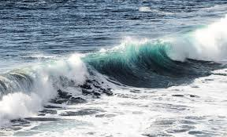

¿Por qué nos calma tanto el mar?
La ciencia dice que la respuesta está en nuestro cerebro.
¿Por qué nos calma tanto el mar? La ciencia dice que la respuesta está en nuestro cerebro.
El mar nos hace más felices.
La corteza prefrontal -un área asociada con la emoción y la auto-reflexión, entre otras funciones- se activa cuando se escuchan los sonidos de las olas. Puede llegar a disminuir la ansiedad y los niveles de cortisol. Nos permite dormir mejor y hace que la sensación del tiempo sea más lenta. Potenciamos nuestra creatividad, ya que una mente en calma es mucho más productiva que una mente sobre-estimulada.
Posee una alta carga de humedad. - Cargado de iones negativos, que tienene efectos beneficiosos para el organismo.
Relajan, favorecen la aparición de la serotonina y mejoran nuestra sensación de bienestar. La presión atmosférica y lacantidad de oxígeno es máxima en el litoral.
|

|